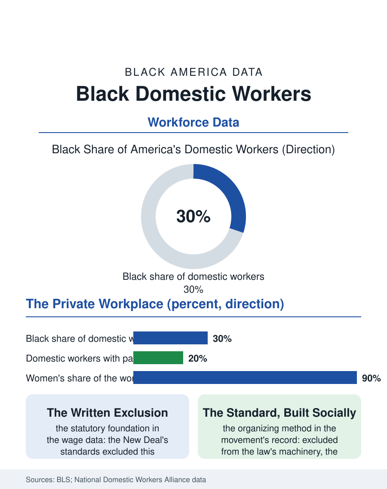

Black Employment
The Key and the Contract: Black Domestic Workers
The oldest occupation, written out of the labor law at its founding, organizing its standard socially while the states repair the exclusion. The domestic file.

Domestic work, the cleaning, cooking, and caring done in private homes, is the oldest Black women's occupation in the American record and the one the labor law was written to exclude: roughly a third of the nation's two million domestic workers are Black, at median wages near the floor, in workplaces no inspector visits. This article reads the domestic workers file.
The Exclusion's Long Life
The file's foundation is the statutory one the labor historians never tire of naming because the wage data keep proving it: the New Deal's labor standards, the minimum wage, the overtime, the organizing rights, and the social insurance of the era, excluded domestic and agricultural workers by design, the price the Southern committee chairs exacted, and the occupation those exclusions priced was, in the cities of the Great Migration, substantially the Black woman's. The modern statute book has repaired the exclusion in pieces, the minimum wage extended in the 1970s, the home care rule of the recent decade extending overtime to the agency-employed aide while the directly hired housekeeper and nanny remain at the patchwork's edge, the state domestic workers' bills of rights, adopted in a growing list of states in the current era, writing the standards the federal book still withholds in full. The workforce's composition in the survey data, drawn from the household surveys that count the privately employed, is older, more female, and more immigrant than the general workforce's, its Black share composed of the native-born veterans of the occupation and the Caribbean and African arrivals for whom the private home remains the port of entry, the two generations meeting in the same kitchens with the century between their terms.
The Invisible Workplace
The work's conditions are defined by its workplace's privacy: one worker, one household, no coworkers, no human resources, the terms set at the interview's kitchen table and enforced by the relationship itself, so that the wage data's floor and the benefits data's void, the paid leave and the retirement plan absent in the great majority of arrangements in the workforce surveys, are the outputs of a negotiation conducted without the floor the law sets elsewhere. The live-in arrangement's remnant carries the file's most extreme terms, the always-available hours the home care rule's sleep-time provisions attempt to price, while the modern market's formalization, the platforms that dispatch the cleaner by the app, has rebuilt the agency model with the algorithm as the office, the rating as the supervisor, and the classification fight of the gig file as its labor law. The organizing file is the current era's: the domestic workers' alliances, built outside the statute's machinery since the machinery excluded them, have won the state bills of rights, the portable benefits pilots, and the standard contracts the workforce's advocates distribute as the negotiation's missing floor, the movement's method being to build the standard socially where it could not be won legally, a strategy whose results the state adoptions now ratify.
The Day's Work
The domestic file closes on the occupation's paradox of intimacy and invisibility, the worker who knows the household's life entire, its marriages and its medicines, and is herself unknown to the household in the particulars of her own, the asymmetry the literature of the occupation, from the freedom era's narratives to the current workforce's own storytelling projects, has always placed at its center. The employer's side of the current data shows the market's formalization spreading from the affluent end, the payroll services and the contracts of the nanny market's professional tier, a tier whose terms the workforce's advocates cite as the proof that the standard is affordable where the will exists. The bureau counts the occupation imperfectly, the household surveys' capture of the private arrangement being the file's known undercount, in the vicinity of two million workers, a third of them Black. The file's last entry is the morning's: the worker letting herself in with the key the family gave her, to the home she will clean and leave, as her grandmother did in the same city's other century, the law's floor rising beneath her at the pace the state bills count, the key and the contract at last beginning, in the leading states' data, to be issued together.
More in Black Employment
The Black Unemployment Rate: The Two-to-One Pattern
Black unemployment runs at roughly twice the White rate — 5.5 percent against 3.3 percent in annual averages — a ratio stable across five decades of federal data. How it is measured and why it persists.
Black Median Weekly Earnings: The 80-Cent Ratio
Black full-time workers earn a median of about $900 a week — roughly 80 cents for every dollar White workers earn. The BLS earnings data by group, gender, and occupation.
Black Labor Force Participation: Working at National Rates
Black labor force participation runs at roughly the national rate — and Black women participate at higher rates than White women. The BLS participation data.
Source: Bureau of Labor Statistics and Current Population Survey data; National Domestic Workers Alliance and Economic Policy Institute domestic workforce reports.